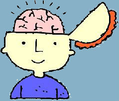
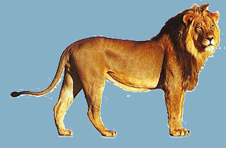

Vechten, vluchten of bevriezen
Psycho-educatie over het fight, flight or freeze mechanisme. Het kind kan door het verhaal heen swipen totdat deze volledig is doorlopen. Wanneer er gekozen moet worden welke reactie het kind herkent in zichzelf wordt deze niet opgeslagen en heeft dit geen effect op de vervolgschermen. Dit is eerder een check of de kinderen hebben begrepen wat de instinctieve reacties zijn.

Het reptielenbrein
Het reptielenbrein zit diep in onze hersenen. Dit deel van het brein zorgt voor de automatisch dingen in ons lijf, zoals hartslag en ademhaling. Daar denken we niet over na, dat doen we gewoon.
De oorzaak van PTSS is vaak een ingrijpende gebeurtenis. Deze kan je zelf hebben meegemaakt of hebben gezien, zoals bijvoorbeeld getuige zijn van een schietpartij. Ook getuige zijn van een gebeurtenis kan leiden tot een PTSS.

Het zoogdierenbrein
Het zoogdierenbrein is het gedeelte van het brein dat zorgt voor de instinctreacties als er gevaar dreigt of als we stress hebben. Instinctreacties die wij mensen hebben, lijken op die van de dieren. Laten we eens kijken wat de dieren doen als er gevaar dreigt:Wat doen hertjes als ze lekker aan het eten zijn en er komt een leeuw aan?
Ze vluchten, omdat ze heel hard kunnen lopen. Ze vluchten tot er geen gevaar meer is. Vluchten is een instinctreactie.
Wat doet die leeuw als hij een hertje heeft gevangen en hij lekker aan het eten is en er komt een andere leeuw aan?
Hij vlucht niet want leeuwen vechten. Daar zijn ze goed in. Als er gevaar dreigt, vecht de leeuw. Dit is ook een instinctreactie.
En wat doen konijntjes als ze in gevaar zijn?
Ze bevriezen als het ware, zodat ze heel stil wachten tot het gevaar overgaat. Dat kan ook een instinctreactie zijn
Diezelfde instinctreacties – vechten, vluchten en bevriezen – zie je ook bij mensen. Welke past het beste bij jou?
Vechten
Vluchten
of
Bevriezen
Dat was het zoogdierenbrein. We hebben ook nog het mensenbrein. Het gedeelte van de hersenen waarme we praten, nadenken, overleggen, organiseren en plannen. Het vierkant om het menselijk brein noemen we je ‘raampje, je raampje van wat je aankan.’
Als er geen gevaar dreigt, werken als onze hersendelen tegelijk, bijvoorbeeld als je lekker televisie aan het kijken bent.
De stress die je dan voelt kun je met een lijntje weergeven. Dat lijntje bevindt zich dan hier
Maar als het dan bedtijd is en je wilt heel graag verder kijken, maar dat mag niet van mama, dan word je een beetje boos en de stress loopt op
Als dit het lijntje is van stress, dan gaat dat zo omhoog. Je zegt tegen mama dat je het programma héél graag wilt afkijken. Als mama dan zegt dat dat mag, dan zakt het lijntje weer en wordt je rustig.
Maar als mama boos wordt en de televisie uitzet, dan loopt het lijntje verder omhoog en verder en word je heel boos. Dan gaat het lijntje buiten het raampje
Dan is de stress te hoog en gaat je mensenbrein uit
Dan werken alleen nog je zoogdierenbrein en je reptielenbrein en dan gaat automatisch de instinctreactie in werking. Het mensenbrein is dan uit en dat betekent dat je dus niet meer goed kunt nadenken of overleggen. Je handelt meteen vanuit je instinct. Dat is zo in onze hersenen geprogrammeerd. Wanneer er gevaar dreigt en je gaat rustig nadenken en overleggen, dan breng je jezelf nog meer in gevaar
Nu is het zo dat kinderen die veel nare dingen hebben meegemaakt een veel kleiner raampje hebben dan andere kinderen.
Dus ook als je televisie kijkt, ben je al bijna bovenaan in je raampje. Je hebt dan maar een klein beetje stress nodig om buiten je raampje te gaan